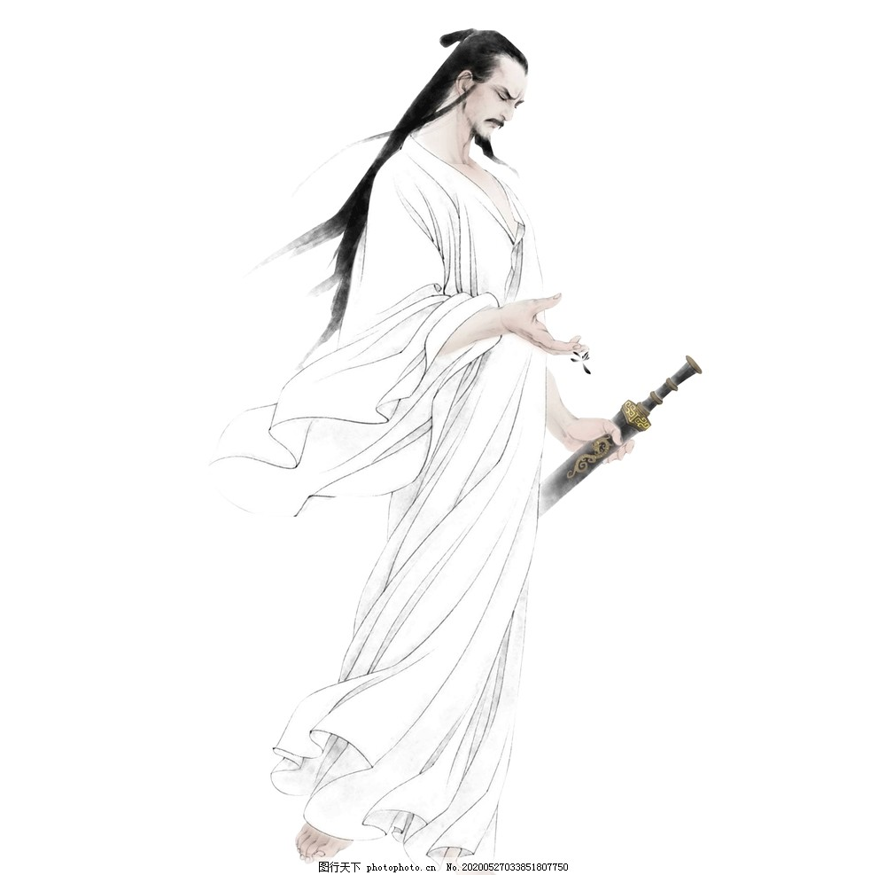
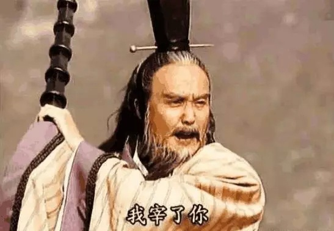

据《史记》“屈原贾生列传”记载，屈原，是春秋时期楚怀王的大臣。他倡导举贤授能，富国强兵，力主联齐抗秦，遭到贵族子兰等人的强烈反对，屈原遭馋去职，被赶出都城，流放到沅、湘流域。他在流放中，写下了忧国忧民的《离骚》、《天问》、《九歌》等不朽诗篇，独具风貌，影响深远（因而，端午节也称诗人节）。公元前278年，秦军攻破楚国京都。屈原眼看自己的祖国被侵略，心如刀割，但是始终不忍舍弃自己的祖国，于五月五日，在写下了绝笔作《怀沙》之后，抱石投汨罗江身死，以自己的生命谱写了一曲壮丽的爱国主义乐章。 传说屈原死后，楚国百姓哀痛异常，纷纷涌到汨罗江边去凭吊屈原。渔夫们划起船只，在江上来回打捞他的真身。有位渔夫拿出为屈原准备的饭团、鸡蛋等食物，“扑通、扑通”地丢进江里，说是让鱼龙虾蟹吃饱了，就不会去咬屈大夫的身体了。人们见后纷纷仿效。一位老医师则拿来一坛雄黄酒倒进江里，说是要药晕蛟龙水兽，以免伤害屈大夫。后来为怕饭团为蛟龙所食，人们想出用楝树叶包饭，外缠彩丝，发展成粽子。 以后，在每年的五月初五，就有了龙舟竞渡、吃粽子、喝雄黄酒的风俗；以此来纪念爱国诗人屈原。

端午节的第二个传说，在江浙一带流传很广，是纪念春秋时期(公元前770--前476年)的伍子胥。伍子胥名员，楚国人，父兄均为楚王所杀，后来子胥弃暗投明，奔向吴国，助吴伐楚，五战而入楚都郢城。当时楚平王已死，子胥掘墓鞭尸三百，以报杀父兄之仇。吴王阖庐死后，其子夫差继位，吴军士气高昂，百战百胜，越国大败，越王勾践请和，夫差许之。子胥建议，应彻底消灭越国，夫差不听，吴国大宰，受越国贿赂，谗言陷害子胥，夫差信之，赐子胥宝剑，子胥以此死。子胥本为忠良，视死如归，在死前对邻舍人说:“我死后，将我眼睛挖出悬挂在吴京之东门上，以看越国军队入城灭吴”，便自刎而死，夫差闻言大怒，令取子胥之尸体装在皮革里于五月五日投入大江，因此相传端午节亦为纪念伍子胥之日。

端午节的第三个传说，是为纪念东汉(公元23--220年)孝女曹娥救父投江。曹娥是东汉上虞人，父亲溺于江中，数日不见尸体，当时孝女曹娥年仅十四岁，昼夜沿江号哭。过了十七天，在五月五日也投江，五日后抱出父尸。就此传为神话，继而相传至县府知事，令度尚为之立碑，让他的弟子邯郸淳作诔辞颂扬。 孝女曹娥之墓，在今浙江绍兴，后传曹娥碑为晋王义所书。后人为纪念曹娥的孝节，在曹娥投江之处兴建曹娥庙，她所居住的村镇改名为曹娥镇，曹娥殉父之处定名为曹娥江。
近代大量出土文物和考古研究证实:长江中下游广大地区，在新石器时代，有一种几何印纹陶为特征的文化遗存。该遗存的族属，据专家推断是一个崇拜龙的图腾的部族----史称百越族。出土陶器上的纹饰和历史传说示明，他们有断发纹身的习俗，生活于水乡，自比是龙的子孙。其生产工具，大量的还是石器，也有铲、凿等小件的青铜器。作为生活用品的坛坛罐罐中，烧煮食物的印纹陶鼎是他们所特有的，是他们族群的标志之一。直到秦汉时代尚有百越人，端午节就是他们创立用于祭祖的节日。在数千年的历史发展中，大部分百越人已经融合到汉族中去了，其余部分则演变为南方许多少数民族，因此，端午节成了全中华民族的节日。